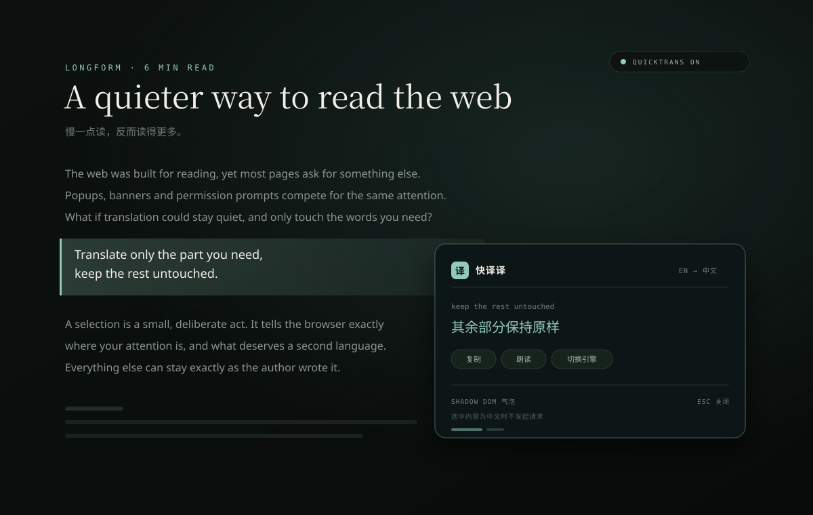
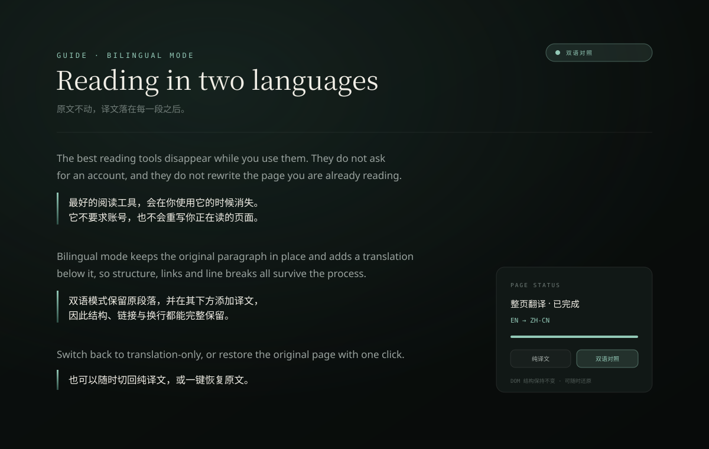
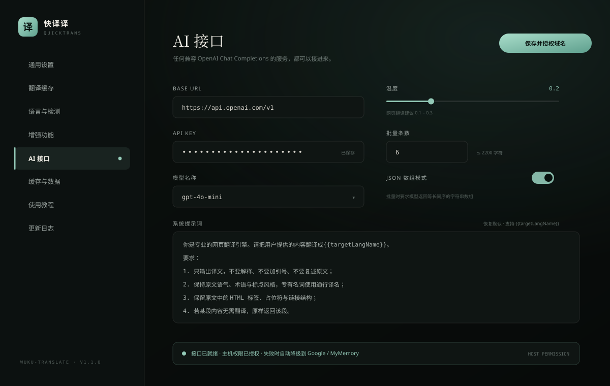

/ 01
划词翻译
选中即刻出现 Shadow DOM 气泡，原文与译文同屏。复制、朗读、临时切换引擎都在气泡里完成；选中内容已是中文时直接提示，不发起请求。单次超过 2000 字符不会触发，避免误选整页。
chrome + edge · mv3 · 19 种目标语言
整页翻译、划词气泡、双语对照，三种方式随取随用。
保留原有排版与链接 —— 只换文字，不动结构。
也能接上你自己的 AI 引擎。
Translate only the part you need.
只翻译你需要的部分，其余保持原样。
Translate only the part you need
只翻译你需要的部分
01 — 它是什么
快译译（技术名 wuku-translate）是一只装在 Chrome / Edge 里的翻译扩展。整页、划词、双语对照三种阅读方式，内置 Google 与 MyMemory，也能接上你自己的 OpenAI 兼容接口与任意请求模板。设置、缓存与站点规则只留在本机。
划词给出即时释义，整页留下双语对照，设置页把引擎与站点规则交给懂它的人。没有多余跳转。

Shadow DOM 气泡，复制、朗读、切换引擎都在里面完成。

逐文本节点替换，只换文字，保留结构、链接与事件。

Base URL、模型、温度、提示词与站点规则，都可以改。
没有账号、没有会员、没有统计脚本。安装包只有 75 KB，能力都在本地与你的接口之间。
选中即刻出现 Shadow DOM 气泡，原文与译文同屏。复制、朗读、临时切换引擎都在气泡里完成；选中内容已是中文时直接提示，不发起请求。单次超过 2000 字符不会触发，避免误选整页。
Alt + Shift + T 翻译 / 恢复
目标语言 · 自动检测源语言
原文保持不动，译文以带渐变竖线的段落插入其后。随时切回纯译文，或一键恢复原文。
接入任意 OpenAI 兼容接口：Base URL、API Key、模型、温度与系统提示词都可改，支持批量与 JSON 数组模式。
URL、Method、Headers、Body 与 responsePath 全部可自定义，支持 {{text}} 等占位符；还能按域名、通配符或路径为单个站点指定引擎与显示模式。主引擎失败时，自动按 AI / 自定义 → Google → MyMemory 降级。
安装、隐私、AI 接口与已知限制，都在这一节里说明白。
下载 zip 后解压到任意固定目录（不要放在临时目录，移动后需要重新加载）。打开 chrome://extensions，右上角开启「开发者模式」，点击「加载已解压的扩展程序」，选择解压后的文件夹即可。首次安装会自动打开设置页。
Chrome 110+ 与 Edge 共用同一份 Manifest V3 安装包，安装步骤一致（Edge 打开 edge://extensions）。Firefox 版本暂未提供，站点不会给出不可用的下载链接。
扩展本身不收集、不上传统计数据，也不含任何第三方分析脚本。待翻译文本会发送到你所选择的翻译服务（Google、MyMemory、你配置的 AI 接口或自定义接口）；设置、翻译缓存与站点规则仅保存在本机 chrome.storage.local。
在设置页「AI 接口」填写 Base URL、API Key、模型名称与温度，保存时会针对该接口域名单独申请授权。兼容 OpenAI、DeepSeek、Moonshot 以及本地 Ollama 等服务；系统提示词支持 {{targetLangName}} 占位符，可一键恢复默认。
整页模式逐文本节点替换，保留 DOM 结构、标签、class、事件与链接，并保留文本前后的空白以维持行内排版。无限滚动与单页路由切换后新出现的内容需要重新触发翻译；iframe、Canvas、PDF 阅读器与 <pre>/<code> 不会被翻译。
默认快捷键为 Alt+Shift+T（翻译 / 恢复整页）、Alt+Shift+S（翻译选中文本）、Alt+Shift+I（翻译输入框）。如与其他扩展冲突，可在 chrome://extensions/shortcuts 中修改。
以 Chrome 为例；Edge 步骤一致，只是扩展管理页地址不同。Firefox 暂未提供安装包。
chrome://extensionsedge://extensions更新代码后，在扩展管理页点击该扩展的「刷新」按钮即可，无需重装。安装包为免构建的原生版本，不需要 Node.js 或 npm。
版本号遵循语义化版本；完整记录见仓库中的 CHANGELOG.md。
07 — 获取
一份 MV3 安装包，Chrome 与 Edge 通用。自动识别你的浏览器并给出对应版本；识别不到时，可手动选择。Firefox 暂未提供。
正在识别浏览器…
解压后打开 chrome://extensions（Edge 为 edge://extensions），开启开发者模式，点击「加载已解压的扩展程序」。安装包 75 KB，免构建。
SHA-256 / ZIP 4de931cdca14c9b438a673aa2540a36970e0ccceb05ecb45a7a5987e0e47ccb0